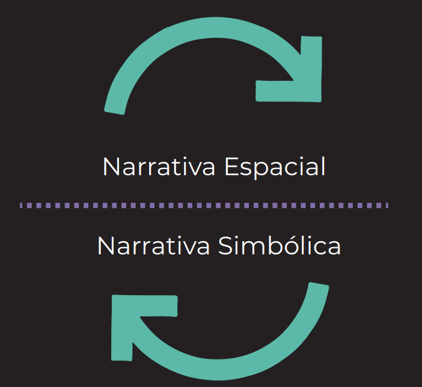
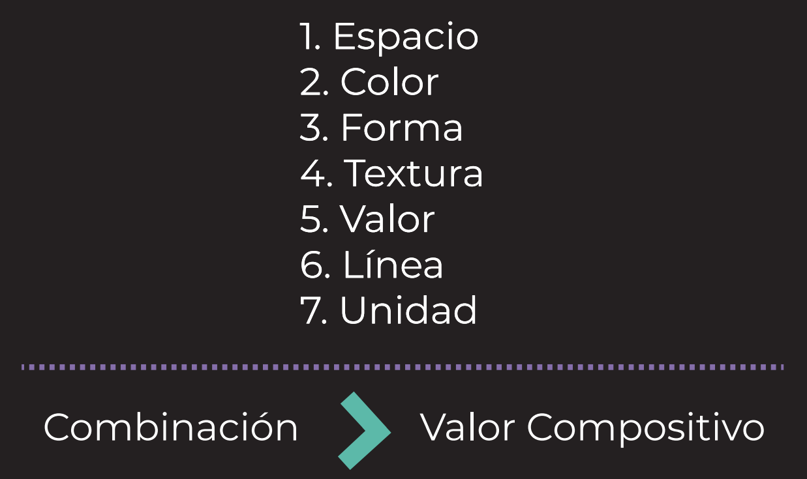
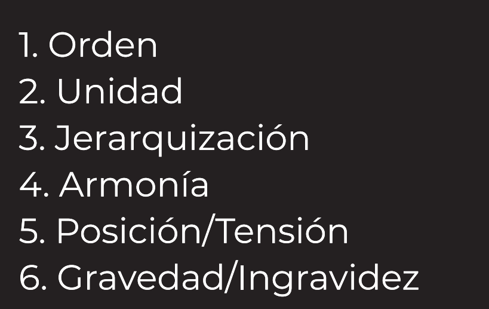
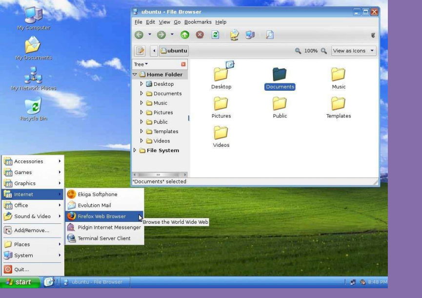
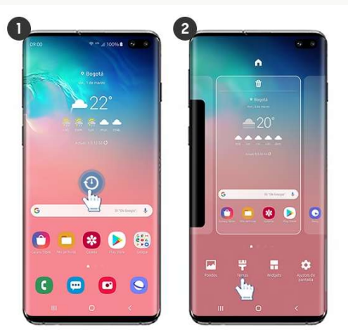
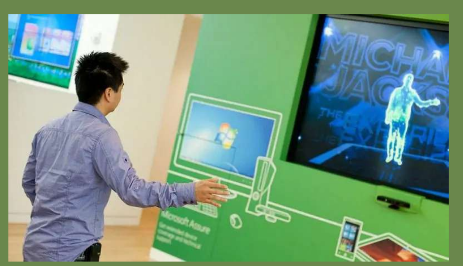

Clase 1: La doble vida del hipersujeto
"La doble vida del hipersujeto"
Leonardo Solaas
Establezcamos, para empezar, una premisa, que en nuestros tiempos es casi de sentido común: a
saber, que esa cosa que llamamos “yo” es, en gran medida, un relato. O bien, un conjunto más o
menos coherente de afirmaciones e historias que repetimos día a día a otras personas y a nosotros
mismos. Es la suma de las ideas que tenemos acerca de lo que somos. Es un entramado variable
hecho de lenguaje.
Agreguemos a esto la siguiente hipótesis: que las formas literarias dominantes en una cierta época
tienen una gran influencia sobre la forma en que se constituye esa subjetividad. Son el modelo y la
caja de herramientas disponible para armar nuestra propia historia.
Hasta hace poco el género literario dominante era la novela. Con “dominante” quiero decir: el más
popular, el que los lectores pasaban más tiempo leyendo, e incluso los no lectores recibían en la
atmósfera cultural de la época.
La novela nace con la modernidad, y trae consigo la innovación técnica del acceso directo al
mundo interior de los personajes. A diferencia, por ejemplo, del teatro, donde sólo veíamos lo que
los actores se decían unos a otros, en la novela podemos ver lo que un personaje se dice a sí
mismo. Somos espías o infiltrados en el espacio íntimo del pensamiento, completamente
inaccesible en la vida real salvo por la excepción privilegiada de nuestra propia mente. La magia
del artificio novelesco es permitirnos estar en otro como en nosotros mismos. Nos convierte en
invasores que escuchan pensamientos ajenos.
También es íntima la situación de consumo de la novela: estamos solos con el libro. Tanto el teatro
como otros géneros orales (cuentos tradicionales, poemas épicos) estaban asociados a un
encuentro social. Las historias eran una forma de estar con otros, un ritual de intercambio y
creación de lazos entre dos o más personas. La novela, en tanto efecto del crecimiento de la
alfabetización y la invención de la imprenta de tipos móviles, es una forma de encuentro diferido,
que se disfruta en soledad.
Pero, ¿qué tipo de vida cuenta la novela? Cuenta la vida de un sujeto que se ve enfrentado a su
propia libertad, y que debe conquistarla por medio de la toma de decisiones vitales.
En las sociedades tradicionales, pre-modernas, la libertad no era un problema muy serio: las
identidades estaban determinadas mayormente desde el nacimiento, incluyendo rango social,
ocupación u oficio, perspectivas de matrimonio y aspiraciones posibles. Rebelarse contra el
ordenamiento social establecido era riesgoso y mal visto. Cada persona tenía su lugar en el plan
divino y su misión era ocuparlo adecuadamente.
La modernidad introduce el problema de la elección. El espíritu libre, o la sustancia pensante, ya
no tiene un lugar preestablecido en el cosmos. Tiene que decidir qué hacer con su vida.
El héroe de la novela es el sujeto humano que goza o sufre de esa libertad, que se enfrenta al
mundo armado de su fuerza, voluntad e inteligencia, pero sin guía alguna ni destino fijado de
antemano. Las escrituras ya no sirven como manual de instrucciones ni modelo de la vida que
debemos vivir. Estamos solos ante el cosmos.
Entonces, en la modernidad la vida es una novela. Cada uno es el héroe de su propia historia, y
una actividad principal del sujeto moderno es relatar esa historia, tanto a los otros como a sí
mismo. La novela se organiza en instancias dramáticas: los momentos donde mejor se manifiesta
el sujeto son los dilemas existenciales, los grandes momentos de decisión. Una vida es, en síntesis,
un encadenamiento de escenas clave que explican y demuestran quién es ese sujeto.
¿Cómo estamos ahora en relación a ese modelo? Durante el siglo XX los medios audiovisuales
empiezan sin duda a introducir novedades. Las historias se consumen más rápido, en mayor
cantidad y menor detalle, y emergen industrias que las convierten en un bien abundante, una
commodity. Empezamos a vivir en un mundo saturado de historias.
Pero yo diría que el modelo de la novela no entra en una crisis seria sino hasta nuestros días. ¿Cuál
diríamos hoy que es el género literario dominante? Si lo juzgamos por el tiempo que dedicamos
cada día, sería sin duda el hipertexto en Internet, y en particular las series infinitas de posts en
redes sociales como Facebook, Twitter, Instagram y otras.
Adoptando la terminología de Facebook, podemos llamar “stream” a esa cadena interminable de
informaciones que recorremos haciendo scroll. El stream tiene una forma fragmentaria,
discontinua, que no se parece a ninguno de los géneros tradicionales. Es más bien como el diálogo
interno, que salta de una cosa a otra sin mucha coherencia. O peor aún, porque mientras una
mente humana mantiene al menos el tenue hilo de la asociación libre, en el stream cada
fragmento no tiene más relación con el anterior y con el siguiente de la que emerge azarosamente
y a posteriori.
Como no hay continuidad, la experiencia del stream es una especie de eterno presente: cada post
vive en su tiempo separado, como una instancia, a veces, de una línea narrativa separada y virtual,
que el lector tiene que reconstruir a partir del recuerdo de otros posts sobre el mismo tema. No
existen el suspenso o la tensión narrativa que movían la acción en la novela, sino una especie de
estado de flujo sin dirección determinada, de curiosidad abierta y vaga expectativa de que la
próxima información que aparezca en pantalla sea más sorprendente o interesante que las
anteriores.
Podríamos decir que el presente continuo del stream nos da acceso al acontecimiento, en el
sentido de lo que sucede en el mundo en este preciso instante. Es la historia del presente. Eso
supone que el mundo es algo en estado de flujo y cambio perpetuo. Al contrario de la novela, en la
que el mundo solía ser un fondo relativamente estable sobre el que el héroe se movía, en el
stream nos encontramos inmóviles frente a la pantalla, contemplando como en un aleph a un
mundo que se mueve y se transforma ante nuestros ojos.
Pero claro, otra condición fundamental del stream es que no somos meramente lectores: todos
podemos también insertar nuestras propias informaciones en el flujo, y volvernos co-autores de
ese texto colectivo. En el mundo de la novela, unos pocos escritores escribían para muchísimos
lectores. Pero ahora la escritura se ha democratizado: todos leemos y todos escribimos, en un
ciclo continuo y retroalimentado de producción y consumo. A esta nueva literatura debe
corresponder, según nuestra hipótesis, un nuevo tipo de sujeto “escrito” bajo este paradigma. Se
trataría de un sujeto del hipertexto o, brevemente, un hiper-sujeto.
Roland Barthes imaginaba, en una entrevista de 1974, una práctica que ignorara las figuras
mayores de la modernidad literaria: que no resultara en novelas, ni en poesías, ni en ensayos. Era
“una cierta idea utópica de la literatura, o de la escritura, una escritura feliz”[1]. Los textos
circularían en pequeños grupos de amistades, por fuera de toda instancia mercantil, y se trataría
entonces “del deseo de escribir, del goce de escribir y del goce de leer”, derribando el divorcio
entre la lectura y la escritura.
El cine y la televisión eran todavía esencialmente modernos, porque no rompían con el modelo
asimétrico de la novela (y de la pintura, la música, etc.), en el que unos pocos productores
producen informaciones para muchísimos consumidores, que los reciben de forma mayormente
pasiva. Es la cultura de masas, el modelo del broadcasting. La visión utópica de Barthes era la de
un modo de producción distinto, más allá de las jerarquías y asimetrías fundamentales del
capitalismo moderno. Un modo horizontal, simétrico, sin centros, más cercano al diálogo que al
discurso.
En 1984 Vilém Flusser tuvo una visión semejante. Propuso distinguir, por un lado, los “hilos
fascistas”, que son los que bajan en haces (fasces) desde los centros de poder hacia los nodos
periféricos, y por otro los “hilos antifascistas”, que son aquellos que corren en sentido transversal,
conectando a los nodos entre sí directamente, sin pasar por los centros de poder[2]. Flusser
escribía antes de que la Internet fuera una realidad cotidiana, pero veía ya en las potencialidades
de la técnica la apertura futura de estos canales orientados al diálogo, que se perfilaban como una
señal de esperanza en un mundo culturalmente homogéneo y hegemónico.
Hoy vivimos cada día, con una intensidad impensada, en alguna versión de la utopía de Barthes y
de Flusser: intercambiamos libremente informaciones en grupos de amistad e interés, en un
continuo de lectura y escritura sin barreras de entrada ni mediaciones comerciales. Sin embargo,
empujados por la técnica a esta tierra prometida del diálogo universal, no está para nada claro que
se trate efectivamente de una utopía.
En primer lugar, el efecto de la “escritura feliz” es muchas veces el hastío o el agotamiento. El
stream se vuelve homogéneo, repetitivo, falto de sentido. La hiper-comunicación nos deja más
aislados. La sobrecarga de información nos impide distinguir qué es importante. Como dice Boris
Groys, la imagen marxista de una sociedad donde todos somos artistas, es decir, creadores de
informaciones, no es una utopía, sino una pesadilla [3].
En segundo lugar, los centros de poder aún están ahí. Ya no producen contenidos, sino que se
limitan a administrar y distribuir las informaciones producidas por nosotros, los usuarios,
registrando al mismo tiempo cada una de nuestras acciones en sus plataformas con finalidades
comerciales. Así, Google y Facebook se cuentan entre las compañías más cotizadas del mundo,
mientras observamos con alarma y nostalgia la decadencia de las empresas periodísticas
tradicionales, criaturas en vías de extinción sobrevivientes de la era del broadcasting.
Por último, hoy podemos presenciar el espectáculo alarmante de que los “hilos antifascistas”
transmiten en los hechos informaciones fascistas, que tienen efectos tan poco utópicos como el
actual resurgimiento de las derechas y los discursos discriminatorios y reaccionarios en todo el
mundo. Los grupos de afinidad se transforman en burbujas de contenido que crean un caldo de
cultivo favorable a las opiniones más extremas y los discursos delirantes, más allá de todo
contraste con la realidad o con puntos de vista diferentes.
La Internet es literalmente una u-topía, es decir, un no-lugar, que está en cambio entre todos los
lugares, colapsando las distancias geográficas, sociales y culturales. Es el no-sitio donde todos los
humanos podríamos encontrarnos en tanto, simplemente, humanos, en una conversación no
regulada por el peso de las identidades colectivas que habitualmente median nuestros
intercambios: sexo, edad, clase, cultura, nacionalidad.
Esa utopía, sin embargo, se revela como una entidad profundamente paradójica. Se las arregla
para ser al menos tres cosas a la vez: un aleph que nos permite presenciar el flujo del mundo
entero en el marco luminoso de una pantalla; un panóptico donde todo lo que vemos, cliqueamos
y escribimos queda registrado en los inmensos servidores de diversas corporaciones globales y
agencias de seguridad; y una aldea global en la que podemos, al menos en potencia, entrar en
conversación con cualquiera y formar asociaciones de interés sin límites de ningún tipo.
Decidir que la Internet es “buena” o “mala” y dar por cerrado el caso es evidentemente un acto de
ingenuidad o pereza intelectual que elude enfrentarse a esa naturaleza contradictoria, y al hecho
de que todos esos aspectos de la red le son de algún modo esenciales y están ligados de manera
indisoluble.
El caso es que la Internet, como infraestructura técnica, ha instalado por su propia naturaleza una
suerte de socialismo literario, donde todos somos a la vez lectores y escritores. Por ahora, la forma
principal que ha tomado esta nueva literatura es el stream. No podemos decir que sea una forma
corta ni larga: si bien los posts tienden a ser cortos, como en el caso extremo de los 140 caracteres
de Twitter, el stream en sí es virtualmente infinito. Nuestra atención se fragmenta en muchas
informaciones breves, y al mismo tiempo se concentra en una sucesión sin fin de la que muchas
veces emergemos con la clara sensación de que nos atrapó durante demasiado tiempo.
De manera parecida, las grandes decisiones vitales del héroe novelesco han sufrido un proceso de
atomización. En las redes sociales quedamos definidos por la sumatoria de nuestros posts,
reposteos, comentarios y likes. En un mundo sin continuidad narrativa, ya no hay nudos
dramáticos, sino una acumulación continua de micro-decisiones. El dilema existencial de antaño se
convierte en una serie de clics.
Esta nueva especie de hipersujeto demanda, por otra parte, un trabajo de sostenimiento siempre
renovado. En el presente continuo del stream no hay historia, la memoria es débil. Los posts y
likes de ayer son velozmente arrastrados al olvido por las corrientes digitales. El suelo se mueve
bajo nuestros pies. Nos vemos en la situación de la Reina Roja de Alicia, que tenía que correr para
permanecer en el mismo lugar. El trabajo de subjetivación se vuelve una rutina cotidiana, una
tarea permanente.
Más aún, el entorno informacional del hipersujeto cambia todo el tiempo, forzándolo a responder
a estímulos variables e impredecibles, en un estado de adaptación continua. Se trata de una
identidad en flujo regida, como dice Reinaldo Laddaga, por un ideal de la improvisación [4]. Este
contexto premia el virtuosismo en el procesamiento, combinación y producción de informaciones
cambiantes, y favorece la chispa, el ingenio y el slogan por sobre la reflexión o las narraciones
complejas.
En la novela el autor disfrutaba del poder del acceso a la interioridad de sus personajes (en tanto
narrador omnisciente), o de al menos uno de ellos (en la narración en primera persona). En el
stream la opacidad de las mentes ajenas no es ni siquiera un problema, porque cada una de ellas
toma sobre sí la tarea de revelarse en su intimidad. Facebook nos pregunta: “¿Qué estás
pensando?” (“What’s on your mind?”). La distinción entre público y privado deja de tener sentido.
El stream es confesional: un jardín público de interioridades abiertas como flores, cada cual
tratando de dar a conocer su particular esencia.
El estado de hipercomunicación presente no se refiere solamente al colapso de todas las
distancias. En la era de la novela la socialización sucedía en lugares y momentos específicos, pero
ahora, gracias al stream, el email y las aplicaciones de mensajería, la conversación es constante y
ubicua. Vivimos inmersos en un parloteo de tiempo completo. Ya nunca estamos solos, aunque a
la vez, curiosamente, muchos estamos más solos que nunca. Somos al mismo tiempo un
hipersujeto en estado de comunicación absoluta, y un hiposujeto profundo cada vez más solitario
y aislado. Tal vez estemos en proceso de devenir mentes-enjambre, como abejas u hormigas,
donde la individualidad, que era tan fundamental para el hombre moderno, quede subordinada a
procesos impersonales de pensamiento colectivo; al tiempo que nuestros cuerpos queden cada
vez más recluidos en espacios estancos.
La novela era una poderosa máquina de construcción de sentido, en el sentido elemental de algo
que va hacia a algún lado: el arco narrativo se tensaba hacia su fin, y todas las acciones del héroe
parecían quedar justificadas y explicadas por la necesidad de la historia. En tanto protagonistas de
nuestra propia novela, también nuestras vidas quedaban transidas de sentido. Es válido
preguntarnos entonces: ¿cuál es el sentido del stream? O bien, conversamente, ¿cómo hace
sentido de su vida el hipersujeto?
Es claro que de un modo muy diferente: ya no en la epopeya de una búsqueda o en la persecución
de un fin último, sino en la reacción instantánea al estímulo presente. Cada clic es un microsentido, una minúscula flecha apuntada en cierta dirección, que junto con otras forma una suerte
de “nube de sentido”: el cuerpo fantasmal del hipersujeto.
Para fijar esta distinción, podríamos llamar “sentido fuerte” a esa corriente que empuja la acción
en la novela, y “sentido débil” a la brisa que mueve los clics en el hipertexto. El primero estaba
ligado a un sujeto profundo en sus dilemas y decisiones. El segundo constituye un sujeto de
superficie, manifiesto en el efecto de sus acciones sobre una pantalla.
Retornemos entonces a este punto: Nuestra convivencia inmaterial en el no-lugar de la Internet
promete tal vez una nueva forma de vida, el tao de un eterno presente, con identidades fluidas y
la posibilidad de (re)inventarse a sí mismo más allá de toda determinación externa: finalmente, la
libertad de ser lo que uno quiera.
Es una utopía a la que llegamos sin manifiestos ni revoluciones, sino por el contrario casi sin
darnos cuenta: no sabemos bien qué pasó y de pronto estamos aquí. Y, una vez más, no queda tan
claro que se trate de un mundo feliz: la libre creación de una identidad virtual deviene, como dice
Boris Groys, una obligación del diseño de sí [5]. El avatar que nos representa en el ciberespacio se
convierte en un producto, atrapado en la lógica general del capitalismo, y uno termina siendo el
gerente de marketing de sí mismo. La ligereza liberadora del sentido débil se vuelve simulacro,
cuando no directamente impostura y falsedad.
Hay una amplia variedad de formas de experimentar esta transición entre regímenes de sentido.
Algunos la viven con naturalidad, incluso con entusiasmo, mientras que otros la padecen como un
hecho inevitable pero agotador y desafortunado. Sin embargo, todos seguimos encontrándonos
con momentos dramáticos, seguimos sufriendo como el más tradicional personaje de ficción, y
seguimos hablando de nuestra novela familiar con amigos y terapeutas. Es decir, el hipersujeto no
llegó para simplemente reemplazar al sujeto tradicional y aligerarnos de su peso, sino que se
adosó como un apéndice o extensión: una cosa más de la que debemos ocuparnos.
Quién sabe, tal vez los niños de hoy estén destinados a un mundo totalmente regido por el sentido
débil, como sujetos de superficie que viven el momento, se reinventan cuando quieren, y no
necesitan para nada justificarse con historias ni pensarse a sí mismos como protagonistas de una
novela. Pero al menos a nosotros, humanos de transición, sólo nos queda la posibilidad de esta
doble vida, de sostener a la vez y en paralelo estos dos sujetos más o menos relacionados entre sí,
pero también inevitablemente desfasados, porque pertenecen a espacios y tiempos diferentes.
Podemos ver al hipersujeto como una máscara digital, un avatar que nos representa en el
ciberespacio, pero también, cada vez más, al sujeto histórico como un infra-sujeto, el resto
privado y oculto, incluso un tanto vergonzoso, de nuestra reluciente identidad inmaterial. Y todo
esto sin hablar de esa tercera forma extra-lingüística del “yo” que es el cuerpo físico.
Devenimos, entonces, seres híbridos, divididos, como un centauro… O algo más extraño aún,
porque el centauro seguía teniendo una sola cabeza, pero los dos sujetos conviven uno junto al
otro disputándose el control, en un juego de tensiones y contradicciones permanentes. Como si el
centauro tuviera a la vez una cabeza de humano y otra de caballo, y ambas no estuvieran siempre
de acuerdo acerca de qué hacer o qué es lo importante [6].
Podemos señalar una última paradoja del hipersujeto: si bien es una identidad (o un proceso
identitario continuamente renovado) que puede tener consecuencias muy reales en nuestras
vidas, todas las intervenciones que lo constituyen quedan inmediatamente expuestas al
anonimato. Está en la naturaleza del stream socavar toda autoría: todo lo que ingresa en él es
absorbido en un flujo impersonal de signos e inmediatamente separado de su origen, por acción
de la copia y el reposteo. El meme es esa porción de información que se reproduce como si tuviera
vida propia, en virtud de la apropiación del mismo que efectúan innumerables sujetos. El nombre
del creador inicial de esa información es casi siempre desconocido y en todo caso irrelevante.
El hipersujeto es por lo tanto, en más de un sentido, una identidad al borde de la disolución: por
un lado, por la corriente que arrastra todo rápidamente hacia el olvido. Por otro, por la fácil
absorción en el anonimato de las informaciones producidas. Y tal vez, además, por la participación
en identidades colectivas e impersonales, constituidas por informaciones que circulan por la web
esperando alimentar su vida digital con nuestros reposteos y likes.
El espacio informático, con su baja resistencia a la conectividad, favorece la disolución de la
identidad individual en identificaciones colectivas. El mundo real, en su lentitud y tosquedad, hace
difícil no toparse con personas distintas, pero la web está inmediatamente abierta al cultivo y la
retroalimentación de todo tipo de ilusiones, posiciones extremas y delirios paranoides. Es el lado
oscuro de su potencia de formación de comunidades, y la semilla de la sociedad post-verdad en la
que vivimos hoy, donde ningún hecho puede resistir la interpretación y la confirmación mutua de
un grupo de hipersujetos con una idea fija. De ahí, como decíamos antes, que la supuesta hiperdemocracia de la comunicación horizontal termine en reacciones y fascismos variados.
Podríamos arriesgar la hipótesis de que la decadencia del formato de narración larga es correlativa
al ocaso de los razonamientos complejos: así, las afirmaciones ya no necesitan una secuencia
lógica o la demostración de ciertos hechos para sustentarse, sino que les basta con cierta fuerza
persuasiva o verosimilitud emocional, con la pregnancia del meme. La verdad también se vuelve
instantánea y fragmentaria: más bien un efecto de verdad, del que ni siquiera se espera que forme
parte de un sistema de creencias más o menos coherente.
Es difícil decir cómo se desarrollará en el futuro esta batalla entre diferentes literaturas o
regímenes de sentido. Más aún, diría yo que es difícil decidir qué deberíamos desear que pase.
Seguramente no queremos volver al modelo asimétrico del broadcasting y al afán totalizador de
los discursos de la primera modernidad. Pero la misma naturaleza horizontal, fragmentaria y
pasajera del stream lo convierte en un terreno fértil para la banalidad, la redundancia y la falta de
responsabilidad. El desafío consiste en habilitar un máximo de libertad sin caer en la entropía
absoluta; un máximo de conectividad sin que el ruido ahogue todo sentido y relevancia.
Podríamos tal vez imaginar algunas características deseables para la naciente sociedad del
hipertexto. Por ejemplo, que se desarrollen y popularicen técnicas para frenar el alcance
panóptico de los centros de poder corporativos y gubernamentales en la Internet (digamos, la
encriptación, la comunicación peer-to-peer, el blockchain y el software de código abierto). O que
vayamos encontrando maneras eficaces de volver compatible la hiperlibertad de inventarse a sí
mismo como sujeto virtual con la responsabilidad por las informaciones que se introducen y la
limitación de la violencia, el acoso y el engaño ejercidos al amparo del anonimato y la ausencia
física. O que emerjan formas de seleccionar información que disminuyan la redundancia y el ruido
del stream, permitiendo sin embargo el encuentro con informaciones y actores diferentes que
abran brechas en los círculos de confirmación mutua y las burbujas de contenido (probablemente
con la ayuda de inteligencias artificiales). O que descubramos cómo favorecer los encuentros
virtuales sin fronteras, pero con consecuencias reales en el plano emotivo, la colaboración
productiva y la reunión física de cuerpos en el mundo. Es decir, conversaciones que vayan más allá
del “marketing de sí mismo” y contribuyan a la reconciliación del hipersujeto con el sujeto
histórico, expandiendo la potencia de ambos.
Puede ser, sin embargo, que nada de esto suceda, y que toda esta revolución técnica sea funcional
a una alienación creciente, una sociedad de control de unas dimensiones que Orwell nunca se
atrevió a imaginar, y una intensificación simultánea de la superficialidad y de la soledad, de las
falsas apariencias y de la angustia. O bien, puede suceder algo que ni siquiera imaginamos todavía
y que sea simplemente diferente. Después de todo, la técnica viene presentándonos objetos que
se resisten a ser clasificados como “buenos” o “malos” (digamos por ejemplo: el automóvil, la
energía nuclear). Objetos que se revelan más complejos que toda dualidad moralista y
simplemente cambian nuestras vidas, y al mundo mismo, de maneras irreversibles. Los humanos
demostramos nuestra ductilidad adaptándonos una y otra vez a las consecuencias imprevistas de
nuestras propias creaciones.
Lo que nos queda, el dilema que no podemos evitar en concreto, día tras día, es cómo elegimos
decirnos a nosotros mismos: bajo qué régimen literario escribimos nuestro yo. Diseñar un proceso
de subjetivación es, en definitiva, una toma de posición y un acto político, en el que articulamos la
construcción de nuestra persona con la puesta en práctica de un mundo por venir. Otros
momentos políticos del mundo estuvieron signados por el cuestionable beneficio de la certeza.
Hoy, en cambio, no es fácil saber qué hacer con nuestra doble vida: el panorama es incierto, las
tensiones múltiples. Pero ese es el desafío específico del tiempo que nos toca vivir.
● 1. Nuestra continuidad en un estar en línea. Nuestro tiempo como un contínuo, un
flujo de información por el que navegamos: imágenes, videos y textos. Un estar
Conectado, presente y accesible que se confunde con estar disponible para lxs otrxs
en todo momento que esté conectado. > Estar Visible se vuelve estar Disponible.
Dice A. Gurevich, ¿cómo podemos buscar formas para quebrar esas
representaciones? Por ej, el teléfono lo solucionó con el contestador automático.
● 2. Nuestras actividades se fragmentan y estamos dispersos. Todos estamos
hablando por megáfono y compitiendo por la atención. Interrumpimos y somos
interrumpidos. Necesitamos compartir como forma de demostrar que existimos. El
multitasking se vuelve Multisharing. Dice A. Gurevich: estaría bueno poder gestionar
esta interrupción. Dar prioridades a los mensajes, que haya forma de recibirlo y
responderlos como un mail, por ejemplo.
● 3. Las redes sociales no son espacios neutros. Promueven e inhiben prácticas de
acuerdo al uso que hacen las personas con las herramientas que las plataformas
brindan. Por ejemplo, Aceptar- Rechazar, Megustear-Ignorar, Responder-Gostear,
etc. La responsabilidad no está exclusivamente en los usuarios sino en las
herramientas que proponen las apps.
● 4. Dejar Huella. Los dispositivos inventan huellas de nuestra presencia conectada
para empujar nuestra actividad ahí. Ej, los dos tildes celestes de Whatsapp, hay
forma de ocultarlo pese al prejuicio que existe para ciertos usuarios que esta función
se oculte.
● 5. Trabajamos para las plataformas. Las plataformas nos necesitan como
segmento publicitario, amplificadores de diálogos, recomendadores y espirales de
promoción. Personalización de la experiencia. Somos datos y somos “productos”
como personajes.
● 6. La mirada del otro como acto de amor. Esta se manifiesta en línea mediante
valoraciones que le damos a las acciones: me gusta, eliminar, bloquear, mirar las
historias. Hacer contacto es una manera de recibir amor.
● 7. Contar la vida propia. Contar y generar una narrativa de nuestra vida, verse
reflejado en la vida de los otrxs, aspirar a la vida de otrxs. Dice A. Gurevich, Somos
Autores, narradores, personajes. Por las redes sociales escribimos de manera
similar a las memorias, las cartas y a los diarios íntimos.
Lenguaje Visual
El lenguaje visual es un sistema de signos sujeto a ciertas normas semióticas, que debe ser codificado por un diseñador y decodificado por un grupo de usuarixs para que la comunicación visual se lleve a cabo.
El lenguaje visual es el sistema de comunicación que se emplea en la creación de mensajes visuales.Mientras la comunicación visual permite el intercambio de información a través de la vista, el lenguaje visual permite codificar un concepto y decodificar los elementos que fueron vistos.

Elementos del lenguaje visual
1. El Alfabeto Visual
El punto: Elemento primario de la expresión plástica. No tiene dimensiones, sólo tiene posición. El punto (físico) es consecuencia del encuentro del instrumento con la superficie material, la base o el soporte.
La Línea: Es el elemento resultante del movimiento del punto. Tiene dirección, cuando esta es invariable tenemos una línea recta. Reemplazamos la palabra "movimiento" por la palabra "tensión", que es la fuerza interior del elemento.
El Plano: Es una superficie continua que tiene dos dimensiones, largo y ancho, pero no espesor o profundidad. Los planos pueden ser verticales, horizontales, inclinados, cóncavos, convexos, torcidos, distorsionados, curvados, angulares, etc.
¿Qué es la Composición?
Es el ordenamiento de los signos visuales. Es decir su ubicación en el espacio y las posibles relaciones que puedan surgir entre ellos. A partir de estas relaciones se establece una narrativa visual a nivel espacial y a nivel simbólico.
Signos visuales
Elementos de la composición
1. Orden: La forma a partir de la cual los elementos se organizan y establecen una narrativa visual y simbólica. Por ejemplo: la Proporción Áurea 1
2. La unidad: Pone en relación lo diferente. Le proporciona entidad y lo agrupa en un todo. La composición también es un conjunto de signos visuales donde se aglutinan lo singular con lo múltiple
3. Jerarquización: Una composición puede considerarse ordenada cuando posee una relación concreta de estructuración, es decir donde convive una relación de jerarquización/subordinación.
4. Armonia: Se refiere a la forma en que se coordinan el orden y la unidad. Se aplica a lo largo de la construcción de la obra buscando el equilibrio compositivo, lo que permite una lectura ordenada.
5. Posición: Todo signo visual tiene una posición respecto del fondo. De acuerdo a su posición en el centro o al margen surgen diferentes efectos de sentido, creando transiciones y tensiones
6. Gravedad: Nuestros hábitos perceptivos nos dicen que lo más pesado se encuentra en la parte inferior del campo visual
La interfaz y sus metáforas:
La metáfora pone en relación dos términos realizando un desplazamiento de significado.
Las metáforas son potentes
modeladores de la percepción, el
pensamiento y las acciones cotidianas.
Por eso son eficaces dispositivos retóricos
de persuación.
Modelan la percepción, el
pensamiento y las acciones
de los seres humanos y con ello
definen las relaciones intersubjetivas.
Metáfora Conversacional: Los seres humanos y las computadoras son considerados como socios de un diálogo.El operador es un técnico especializado. Usuario y software son emisores y receptores. Intercambio de instrucciones y respuestas preprogramadas
Metáfora instrumental: Surge de la necesidad de masificar el uso del operador no especializado para tareas cotidianas como: buscar, organizar, filtrar, imprimir, etc. El operador es un usuario comun no especializado. Visibilidad de la acción a través de la herramienta: la comunicación se hace visual. Manipulación directa de objetos Control y acciones visibles: tirar, cortar, pegar, borrar, mover, etc.
La metáfora superficial: Surge de la necesidad de agilizar los procesos de tareas en los distintos dispositivos. Área sensible de interacción más grande. El usuarix realiza sus tareas manipulando la información con sus dedos. Se unifica el diseño en los distintos formatos de pantalla, dispostivos móviles y tecnología smart
La metáfora espacial: Surge de la necesidad de crear mundos inmersivos y de que el usuarix realice sus actividades como si estuviera en un entorno que le resulte familiar. Interacción directa con el espacio físico. El usuarix realiza sus tareas con el movimiento de su cuerpo. Relación entre el espacio físico y el entorno simulado
